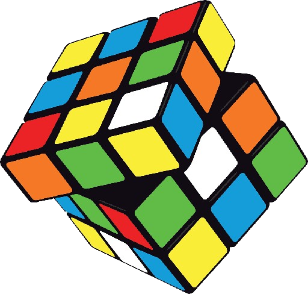
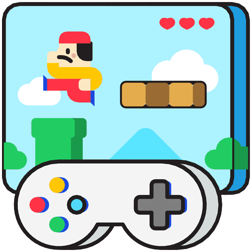

My main hobbies are the following:
This page is dedicated exclusively to talking about the different hobbies I have, the activities I like to do the most in my day-to-day life and in my life in general, what I like to spend time on and enjoy.
~ Soccer ~
Of all the things I like to do, without a doubt, soccer is the main and most relevant thing I can mention. I love everything related to the sport, both playing and watching it. I am currently playing in a quick soccer tournament organized by ITSON, and I usually watch professional soccer matches whenever they are on and are interesting to me. I have been a fan of Club America from Mexico since I can remember, and I am always ready to support my team when needed.
~ Rubik's Cubes ~
One of the hobbies I have had since high school is solving Rubik's cubes. It was an activity I discovered one day when my brother was given a cube and couldn't solve it, so I decided to help him. From there, I began to discover that the world of cubes was bigger than I thought, with many fans and followers, competitions, tournaments, and different categories and types of cubes to solve. At one time, I dedicated myself to speedcubing as my main activity. My best time solving a 3x3 Rubik's cube is 9.47 seconds, 3 seconds from the national record. Currently, I don't practice speedcubing as much, but I still solve different types of cubes, of various shapes and sizes. It is still an activity I enjoy a lot.
~ Video Games ~
Like most people my age, and considering that I study Software, it is more than obvious that one of my hobbies would be video games. Although I don't play them as frequently as most of my friends, classmates, and acquaintances, the truth is that they have been close to me all my life and have helped me enjoy idle afternoons or distract myself from long activities or bad times. My first console was a PlayStation 2 when I was 6 years old. Later, I had a PSP and a PS4, but without a doubt, computer and phone flash games are the ones that have accompanied me the most, due to their accessibility and variety. Currently, I am a big fan of "Campaign" type games. I like the tranquility and things to do in them. I feel that online games have a higher freneticism, and many times instead of relaxing, I end up more stressed. Without a doubt, one of the games I have dedicated the most hours to was FIFA19, and a great achievement I have in that game is reaching the TOP 7 worldwide in a game mode called "Squad Battles." I am sure it is my greatest achievement in video games.